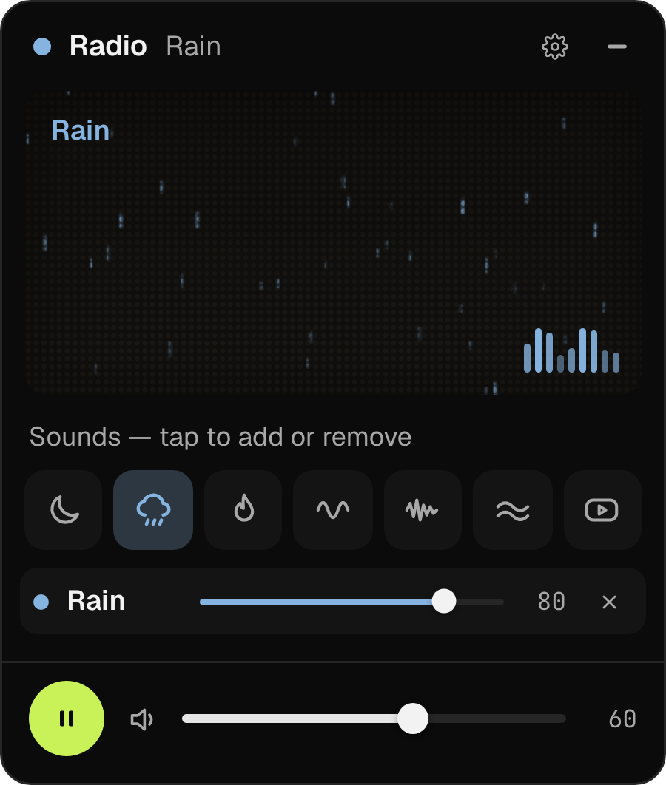
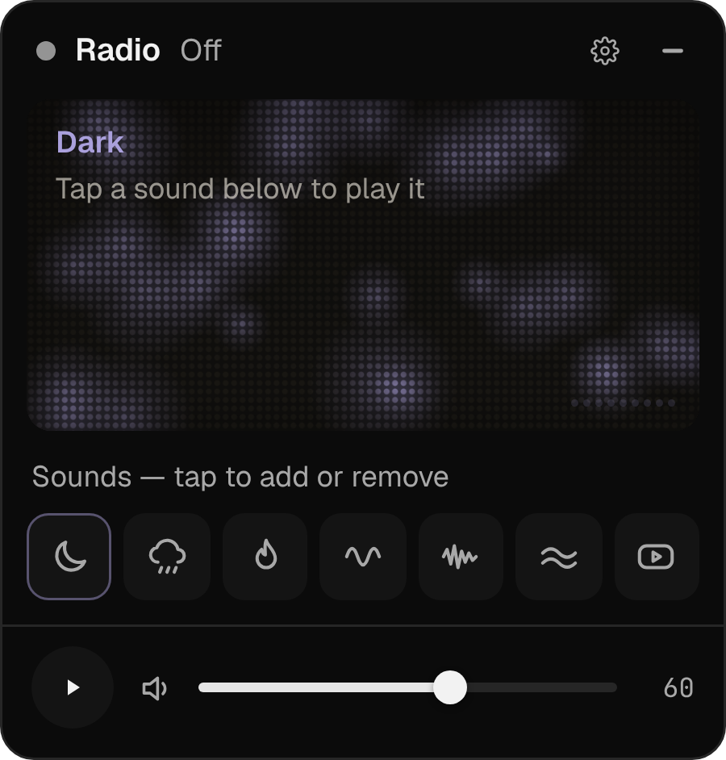
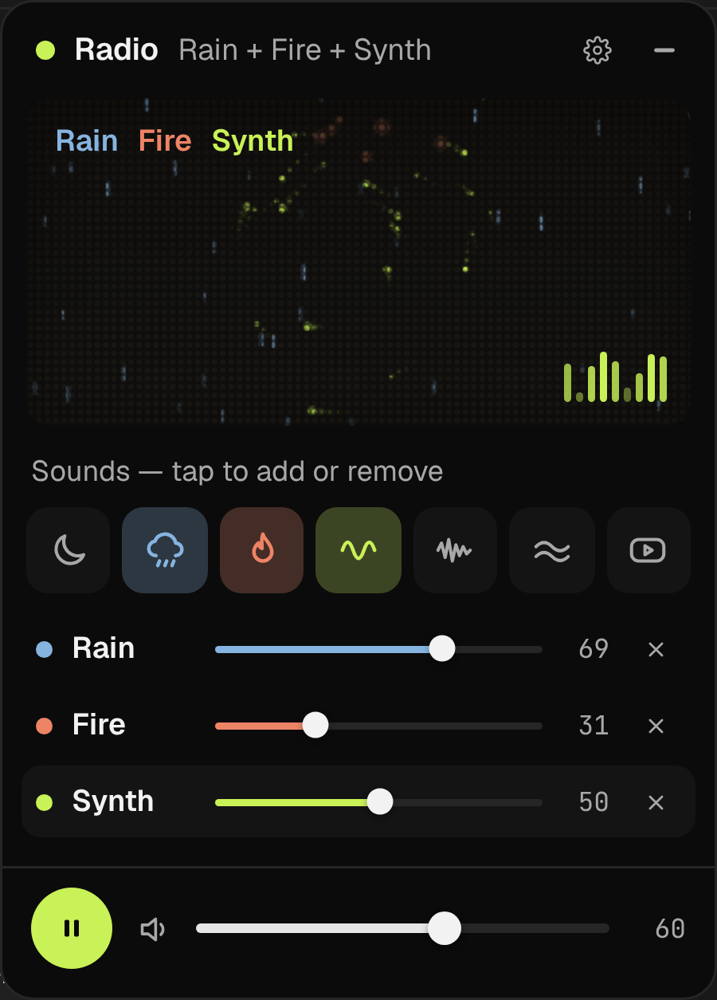
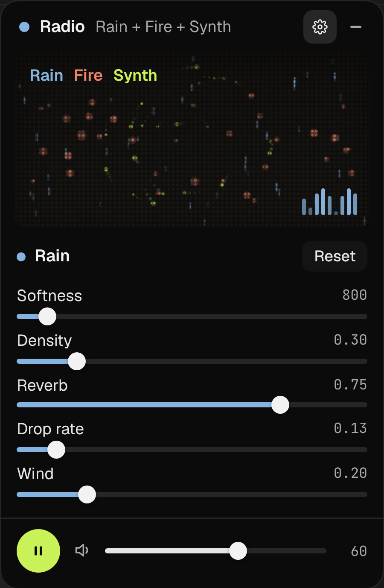
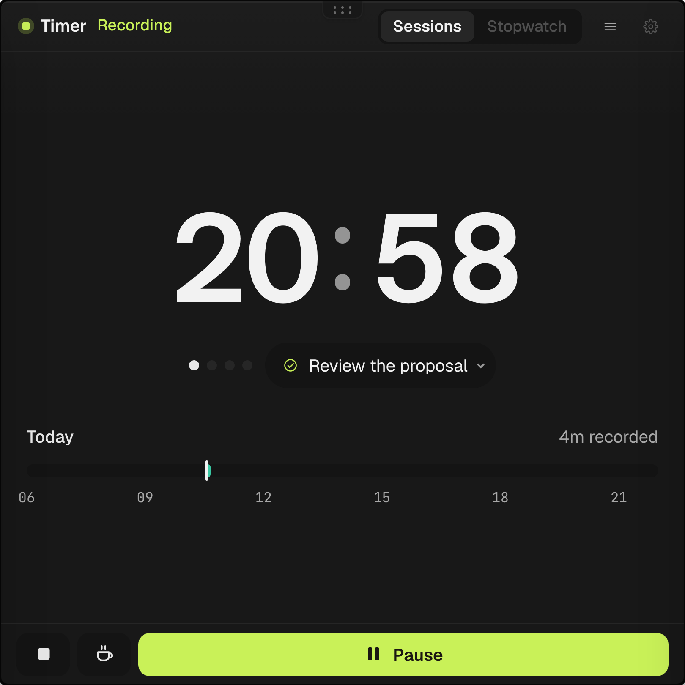

20:58
@krnl0.app
1/6
Give your
focus a
soundtrack.

Built in
swipe →
@krnl0.app
2/6
Tap a sound.
It plays.
Six sounds are built in. Or paste a YouTube link.

Dark
Rain
Fire
Synth
White
Brown
swipe →
@krnl0.app
3/6
Stack them.
Rain, fire and a soft synth. Every sound keeps its own volume.

swipe →
@krnl0.app
4/6
Tune every
sound.
Softness, density, reverb. All yours.

swipe →
25:00
@krnl0.app
5/6
Press start.
Press play.
The Timer counts. The radio plays.

swipe →
Focus has
a sound.
A radio built into your canvas.
K
R
N
L
0
Free download · link in bio
Windows · macOS · Linux